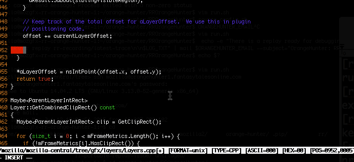
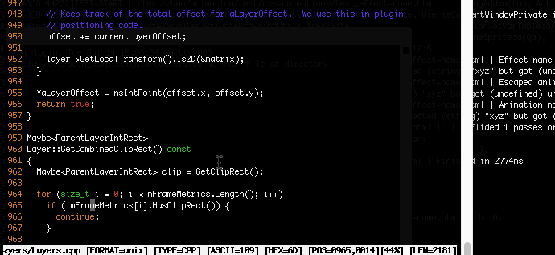

This page covers how to setup and use YouCompleteMe (Ycm) to enable autocompletion for Gecko/Mozilla-Central development. Setup times will take about ~15 minutes.


git clone https://github.com/VundleVim/Vundle.vim ~/.vim/bundle/Vundle.vim
" Vundle vimrc
set nocompatible " be iMproved, required
filetype off " required
" set the runtime path to include Vundle and initialize
set rtp+=~/.vim/bundle/Vundle.vim
call vundle#begin()
" alternatively, pass a path where Vundle should install plugins
"call vundle#begin('~/some/path/here')
" Gecko includes a .ycm_extra_conf.py file in the root directory.
" Update this glob path to your Gecko source code location.
let g:ycm_extra_conf_globlist = ['~/dev/gecko/*']
" This is less secure, but this option will load any ycm config
" file found without a confirmation.
" let g:ycm_confirm_extra_conf = 0
" let Vundle manage Vundle, required
Plugin 'VundleVim/Vundle.vim'
Plugin 'ycm-core/YouCompleteMe'
" End configuration, makes the plugins available
call vundle#end()
filetype plugin indent on
map <C-]> :YcmCompleter GoToImprecise<CR>
OSX: If Ycm is having trouble finding system headers, or just in case, run the following:
$ xcode-select --install
./mach build. The .ycm_extra_conf.py script will properly query the obj directory with the correct include paths and compiler flags.If you encounter any issues please file a bug and make it depend on bug 892973.
Add your tips here